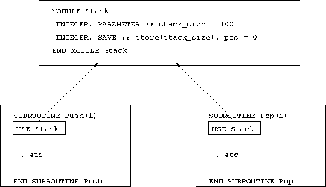

Figure 12: Visualisation of Global Storage in a Module
The diagram indicates how the module sits in the memory separated from the subroutines. Both subroutines USE the module so both have access to it which means that both can read and write to it. Placing this data in global memory space removes the need for communicating the current state of stack the via argument lists.